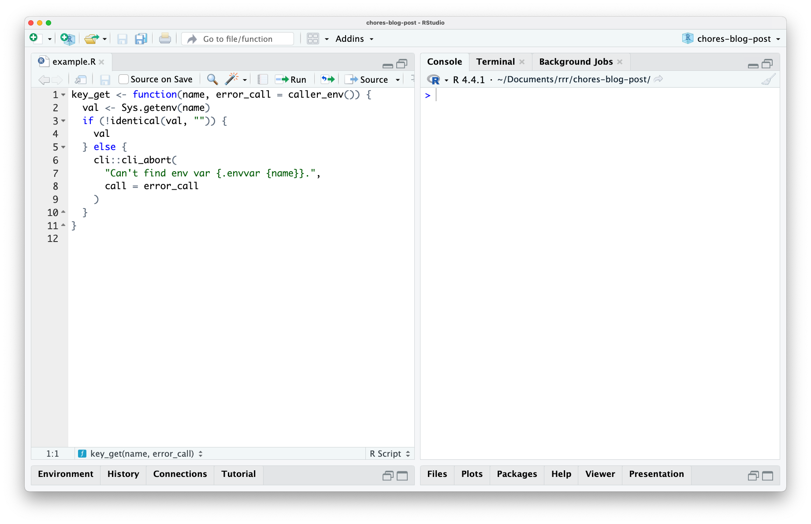
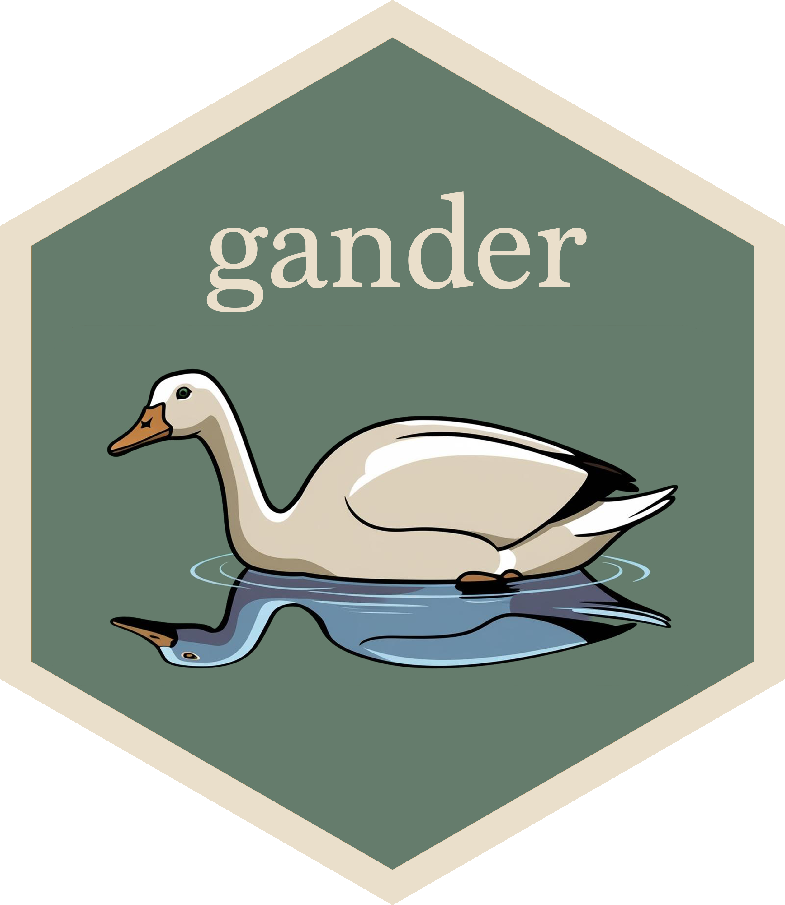

key_get("HOME")[1] "/Users/simoncouch"The following is a cross-post of a post I put together for the Posit Blog; you can read that post here.
What’s a 1-minute data science task you do all of the time? Could you teach another data scientist to do it with a couple paragraphs of explanation and an example or two? If so, you might benefit from checking out chores, a new package that helps you with tedious but hard-to-automate tasks.
chores followed up on the initial release of ellmer, a package that makes it easy to use large language models (LLMs) from R. The package connects ellmer to your source editor in RStudio and Positron via a collection of chore helpers.
chores used to be called pal.
As an R package developer, one thing I do many times a day is write R function documentation using roxygen2. For example, imagine I’m working on this function:

The function grabs the value of an environmental variable, providing a nicely formatted error message if it can’t find it. For example, the HOME environmental variable shows my home folder on macOS:
key_get("HOME")[1] "/Users/simoncouch"This variable doesn’t exist, though:
key_get("IM_A_SILLY_GOOSE")Error:
! Can't find env var `IM_A_SILLY_GOOSE`.This function is ready to export from my package. So, the next step is to write inline documentation using roxygen2. Before I can write about how this function is connected to other topics in my package and any interesting notes about how it can be used, there’s 100-characters-or-so of boilerplate that basically follows directly from the source code of the function. e.g. there are two arguments—nameand error_call—and one of them has a default argument, and so on. That will take me a minute or so to type out, and I won’t really enjoy doing so.
What if I didn’t have to? The chores package supplies a helper for this task: scaffolding out minimal roxygen2 documentation.
In the above video, I:
Select my function,
Press a keyboard shortcut,
Select the “roxygen” helper from a dropdown, and
Press [Enter]
At that point, inline roxygen2 comments begin streaming into my document about my function. Notably, the output is quite minimal; the @param entries just give the argument name and a description of their type, there’s a brief @returns section, and an @export tag. These are the bits of roxygen2 boilerplate that I would likely have written almost exactly the same if I had done so myself. Once this boilerplate is in place, I can check over it and add notes on the interesting parts of what the function does. This is a minute worth of work I wouldn’t particularly enjoy doing—and that would otherwise be quite difficult to automate without LLMs—done for me.
The chores package manages a directory of markdown files, each of which contains instructions on how to do a certain task, or “prompts.” Here’s the current prompt associated with the roxygen chore:
roxygen-chore-prompt.md# Templating function documentation
You are a terse assistant designed to help R package developers quickly template out their function documentation using roxygen2. Given some highlighted function code, return minimal documentation on the function's parameters and return type. Beyond those two elements, be sparing so as not to describe things you don't have context for. Respond with *only* R `#'` roxygen2 comments---no backticks or newlines around the response, no further commentary.
For function parameters in `@params`, describe each according to their type (e.g. "A numeric vector" or "A single string") and note if the parameter isn't required by writing "Optional" if it has a default value. If the parameters have a default enum (e.g. `arg = c("a", "b", "c")`), write them out as 'one of `"a"`, `"b"`, or `"c"`.' If there are ellipses in the function signature, note what happens to them. If they're checked with `rlang::check_dots_empty()` or otherwise, document them as "Currently unused; must be empty." If the ellipses are passed along to another function, note which function they're passed to.
For the return type in `@returns`, note any important errors or warnings that might occur and under what conditions. If the `output` is returned with `invisible(output)`, note that it's returned "invisibly."
Here's an example:
# given:
key_get <- function(name, error_call = caller_env()) {
val <- Sys.getenv(name)
if (!identical(val, "")) {
val
} else {
if (is_testing()) {
testthat::skip(sprintf("%s env var is not configured", name))
} else {
cli::cli_abort("Can't find env var {.code {name}}.", call = error_call)
}
}
}
# reply with:
#' Get key
#'
#' @description
#' A short description...
#'
#' @param name A single string.
#' @param error_call A call to mention in error messages. Optional.
#'
#' @returns
#' If found, the value corresponding to the provided `name`. Otherwise,
#' the function will error.
#'
#' @export
Another:
# given:
chat_perform <- function(provider,
mode = c("value", "stream", "async-stream", "async-value"),
turns,
tools = list(),
extra_args = list()) {
mode <- arg_match(mode)
stream <- mode %in% c("stream", "async-stream")
req <- chat_request(
provider = provider,
turns = turns,
tools = tools,
stream = stream,
extra_args = extra_args
)
switch(mode,
"value" = chat_perform_value(provider, req),
"stream" = chat_perform_stream(provider, req),
"async-value" = chat_perform_async_value(provider, req),
"async-stream" = chat_perform_async_stream(provider, req)
)
}
# reply with:
#' Perform chat
#'
#' @description
#' A short description...
#'
#' @param provider A provider.
#' @param mode One of `"value"`, `"stream"`, `"async-stream"`, or `"async-value"`.
#' @param turns Turns.
#' @param tools Optional. A list of tools.
#' @param extra_args Optional. A list of extra arguments.
#'
#' @returns
#' A result.
#'
#' @export
# given:
check_args <- function(fn, ...) {
rlang::check_dots_empty()
arg_names <- names(formals(fn))
if (length(arg_names) < 2) {
cli::cli_abort("Function must have at least two arguments.", .internal = TRUE)
} else if (arg_names[[1]] != "self") {
cli::cli_abort("First argument must be {.arg self}.", .internal = TRUE)
} else if (arg_names[[2]] != "private") {
cli::cli_abort("Second argument must be {.arg private}.", .internal = TRUE)
}
invisible(fn)
}
# reply with:
#' Check a function's arguments
#'
#' @description
#' A short description...
#'
#' @param fn A function.
#' @param ... Currently unused; must be empty.
#'
#' @returns
#' `fn`, invisibly. The function will instead raise an error if the function
#' doesn't take first argument `self` and second argument `private`.
#'
#' @export
When two functions are supplied, only provide documentation for the first function, only making use of later functions as additional context. For example:
# given:
check_args <- function(fn, ...) {
rlang::check_dots_empty()
arg_names <- names(formals(fn))
if (length(arg_names) < 2) {
error_less_than_two_args()
} else if (arg_names[[1]] != "self") {
cli::cli_abort("First argument must be {.arg self}.", .internal = TRUE)
} else if (arg_names[[2]] != "private") {
cli::cli_abort("Second argument must be {.arg private}.", .internal = TRUE)
}
invisible(fn)
}
error_less_than_two_args <- function(call = caller_env()) {
cli::cli_abort("Function must have at least two arguments.", call = call, .internal = TRUE)
}
# reply with:
#' Check a function's arguments
#'
#' @description
#' A short description...
#'
#' @param fn A function.
#' @param ... Currently unused; must be empty.
#'
#' @returns
#' `fn`, invisibly. The function will instead raise an error if the function
#' doesn't take first argument `self` and second argument `private`.
#'
#' @exportWhen a prompt file lives in the chores directory, the name of the file appears in that dropdown shown in the video. Then, when you select a chore from the dropdown, its associated prompt is submitted to the model along with the code selection you’ve made using ellmer. The response from the model is then written to your file as it’s received.
If you’re an ellmer user, here’s what it’d look like if you wrote the above request out manually:
library(ellmer)
ch <- chat_claude(system_prompt = the_prompt_above)
ch$chat("The selected code.")The roxygen helper is one of three helpers supplied with the chores package. There’s also a testthat helper, which transitions unit testing code to the third edition of testthat, and a cli helper, which transitions erroring code to use the cli package. These three helpers that ship with the package are focused on R package development, as that’s where I’ve gotten the most mileage out of the interface.
That said, the package allows you to write your own helpers, and all that that takes is a couple paragraphs and an example or two in a markdown file. The chores gallery highlights various custom helpers folks have written since the package came to be:
For example, Hannah Frick wrote a helper to migrate code chunk options from R Markdown to Quarto format, and Hadley Wickham wrote a helper to polish NEWS changelogs before package releases. If you write your own helper prompt and would like it to be featured in the gallery, I’d be glad to review your pull request!
Working on ellmer-based packages really helped me begin to wrap my head around what LLMs are capable of. Provided the right pieces of context and given access to the right tools, they can make the practice of developing software a much more enjoyable experience. It’s been neat to see others in the #rstats community making use of ellmer, too; I wanted to call out a few ellmer-related bits and bobs that I’ve come across recently.
For one, Dr. Athanasia Mo Mowinckel wrote up some great reflections on the struggles of using tools like chores with local ollama models in a recent blog post. We’re not quite there yet, but I’m hopeful we will be soon.

Another one is crias, a turn-based adventure game from Frank Hull. In his words:
It is built with the idea of using an LLM as a “Game Moderator”. Currently has one GM called “Pachamama”. The other aspect is using LLMs as players in your “party”. Many LLMs have names like “llama”, “vicuna”, “alpaca”; this game is built on the idea of leading your “party” aka “herd” in a llama-centric journey set in an Andean-inspired world.

Not to toot my own horn, but I’ve also written about another ellmer-based tool that I built recently—gander—on a post on the Posit Blog. gander is a coding assistant that knows about the objects in your R environment, resulting in more accurate completions.
I’ve had a lot of fun working with ellmer and am excited to share about more ellmer-based tools soon.